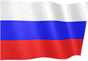
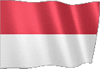
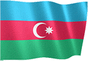

SPIELFÜHRER v3
Wählen Sie die Sprache der Spielanleitung.

  
ALLGEMEINES SPIEL
● Das Ziel des Spiels ist es, die ganze Welt zu erobern, indem man Landoperationen durchführt oder die Geheimagentur nutzt.
● Sie können Optionen in Bezug auf Wirtschaftlichkeit, Sicherheit und Länderverwaltung auf dem Spielbildschirm verwenden.
● Um zum nächsten Tag zu wechseln, müssen Sie den Pfeil unten rechts auf dem Spielbildschirm verwenden.
● Das tägliche Einkommen und die tägliche Bevölkerung werden in Tagesübergängen zu allen Staaten addiert.
● Wenn der Tag vorbei ist, können andere Staaten Ihrem Land Angebote machen oder zufällige Weltereignisse auftreten.
● Die Entscheidungen, die Sie zu Angeboten und Situationen treffen, können sich auf Ihre Wirtschaft, Bevölkerung und Beziehungen zu anderen Regierungen auswirken.
WIRTSCHAFT
● Sie können Geld verdienen, indem Sie in Ihr Land investieren.
● Sie können Geld verdienen, indem Sie einen Steuersatz wählen.
● Sie können Geld verdienen, indem Sie die gefundenen Bodenschätze verarbeiten.
● Sie können Investitionen tätigen, indem Sie Ihre Geschäftsleute in andere Länder schicken.
● Sie verdienen tägliches Einkommen von öffentlichen Einrichtungen.
● Fabrik- und Industrieforschung bringt Ihnen zusätzliches Einkommen.
● Sie verdienen zusätzliches Geld von jedem Touristen, der in Ihr Land kommt.
● Sie können Ihre Wirtschaft unterstützen, indem Sie Kredite aufnehmen.
● Wenn Sie Länder erobern, gewinnen Sie einen einmaligen Hauptpreis.
● 100% des täglichen Einkommens der Länder, die Sie besetzen, werden Ihnen hinzugefügt.
● (Sie können dies im Abschnitt Statistik - Eroberungserlös überprüfen.)
● Sie können Geld verdienen, indem Sie Operationen im Bereich Heimatschutz durchführen.
● Sie können Geld verdienen, indem Sie Cyber-Angriffe auf andere Länder durchführen.
● Sie können Geld verdienen, indem Sie eine nationale Mobilisierung erklären.
● Mit Ihrem Secret Service können Sie Geld verdienen.
BETRIEBSZENTRUM
● Sie können mit Bodenoperationen in Länder eindringen.
● Wenn Sie in der Bodenkampagne erfolgreich sind, erhalten Sie Eroberungspunkte.
● Wenn der Invasionspunkt 100% erreicht, wird das Land erobert.
● Sie können die Armee des feindlichen Landes durch Luftangriffe schwächen.
● Sie können Cyber-Angriffe auf andere Länder ausführen.
● Sie können die zusätzlichen Optionen nutzen, indem Sie das Konsulatgebäude aktivieren.
● Sie können militärische, wirtschaftliche und detaillierte Berichte erhalten, indem Sie Spione in Ländern platzieren.
● Sie können Freundschaftsabkommen mit den Ländern schließen, mit denen Sie Krieg führen.
● Sie können alle Angriffe mit Berechtigungen ausführen.
● Sie können ein Embargo für Länder anwenden.
INLANDSPRODUKTION
● Sie können das gewünschte Produkt im Produktionsbereich produzieren.
● Sie müssen Länderhandelsanfragen senden, um Ihre Produkte zu verkaufen.
● Sie können Preise für Produkte aushandeln, die andere Länder kaufen möchten.
● Nur freundliche Länder möchten Produkte bei Ihnen kaufen.
● Je mehr Produktvielfalt Sie haben, desto wahrscheinlicher ist es, dass Sie handeln.
● Sie können die Preise Ihrer Angebote erhöhen, indem Sie Ihre Handelsbeziehungen mit anderen Ländern verbessern.
PERSÖNLICHE SICHERHEIT
● Die Länder, mit denen Sie Krieg führen, können Sie ermorden.
● Sie sollten den Bericht des Beraters berücksichtigen.
● Um sich vor Attentaten zu schützen, sollten Sie einen äußerst schützenden Berater ernennen.
● Sie müssen auch Support-Pakete aktualisieren.
GEHEIME ORGANISATION
● Sie können Unruhen in anderen Ländern auslösen, indem Sie den Geheimdienst einrichten.
● Sie können mit dem Secret Service ermorden.
● Sie können nur geschultes Personal im Betrieb einsetzen.
● Ihr geschultes Personal und Ihre Waffen erhöhen Ihre Einsatzstärke.
MONTAGE und WAHLEN
● Wahlen finden alle 365 Tage statt.
● Sie müssen die höchste Stimmenzahl erhalten, um die Wahlen zu gewinnen.
● Wenn Sie bei den getroffenen Entscheidungen erfolgreich sind, verdienen Sie zusätzliches Geld.
● Machen Sie Gesetze, Kundgebungen, verteilen Sie Geld, interviewen Sie, um Stimmen zu gewinnen.
● Wenn Sie die Wahlen verlieren, müssen Sie innerhalb von 8 Tagen eingreifen.
● Wenn die militärische Intervention fehlschlägt, ist das Spiel vorbei.
(PREMIUM) GLOBALE ALLIANZEN
● Sie können Ihre eigene Allianz bilden oder bestehende Allianzen eingehen.
● Sie können Treffen mit alliierten Staaten abhalten.
● Sie können Geld verdienen, indem Sie die Anfragen der alliierten Staaten erfüllen.
● Allianzforschung aktiviert zusätzliche Optionen.
● Sie können Ihre Verteidigung stärken, indem Sie Allianzproduktionen verwenden.
● Sie können gemeinsame Operationen mit verbündeten Staaten durchführen.
● Wenn Sie Mitgliedstaaten derselben Allianz angreifen, können Sie aus der Allianz ausgeschlossen werden.
(PREMIUM) VEREINTE NATIONEN
● Sie können bei den Vereinten Nationen über 5 verschiedene Resolutionen abstimmen.
● Entscheidungen über finanzielle Unterstützung oder Wirtschaftssanktionen können für andere Länder getroffen werden.
● Neue Entscheidungen können erst getroffen werden, wenn die aktiven Entscheidungen beendet sind.
● Nur nicht eroberte Länder stimmen bei Entscheidungen ab.
(PREMIUM) SCHWERE INDUSTRIE
● 5 verschiedene kundenspezifische Waffen und Ausrüstungen können von der Schwerindustrie hergestellt werden.
● Nur freundliche Länder mit Handelsanfragen können Ihnen eine Handelsanfrage senden.
● Produzierte Waffen können nicht in Schlachten eingesetzt werden.
GEWINNEN UND VERLIEREN
● Wenn Sie alle Länder zu 100% erobern, gewinnen Sie das Spiel.
● Wenn Ihr Geld weniger als -20.000.000 beträgt, ist das Spiel beendet.
● Wenn das Glück kleiner als 0 ist, ist das Spiel beendet.
ÜBER
● Sie können den Inhalt, den Sie hinzufügen möchten, und Ihre Vorschläge mit uns teilen.
● Sie können uns per E-Mail von der Seite über im Spiel erreichen.
● Wir freuen uns, wenn Sie unser Spiel punkten.
● gute Spiele.